Why off-campus housing feels so stressful.
Student housing in Madison has become harder to navigate, especially for UW–Madison students searching off campus for the first time. Existing market research points to rising rents, limited supply, and early leasing cycles. Our sprint asked how those pressures turn into stress, uncertainty, and rushed decisions for students.
Over two weeks, my partner and I ran a mixed-methods study with a survey, interviews, and affinity-diagram synthesis, then turned what we learned into five design recommendations.
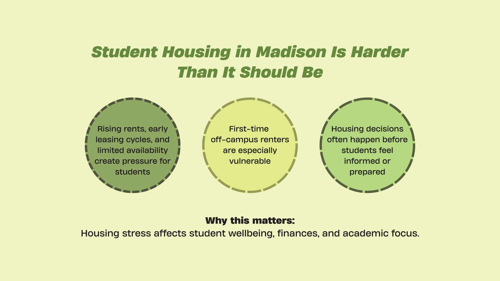
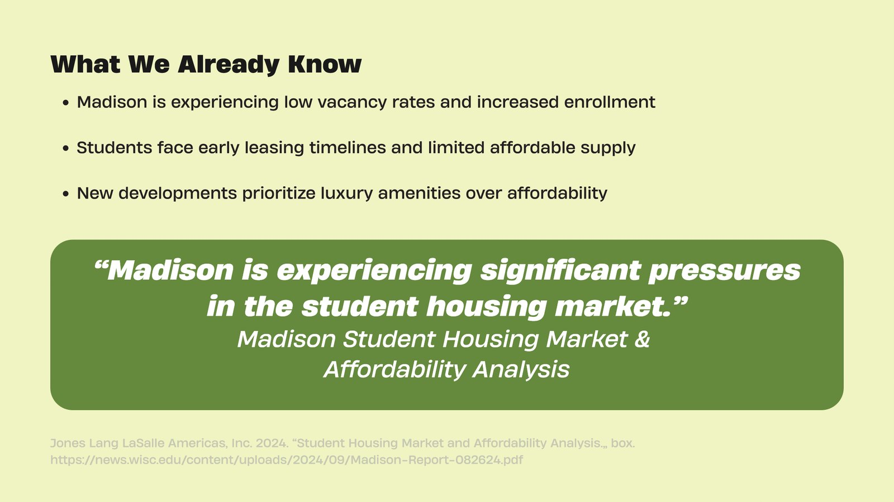
A wide survey, then interviews to understand the why.
We started with a large survey to find common pain points, then used interviews to validate those patterns and add emotional context. We analyzed both together using affinity diagramming.
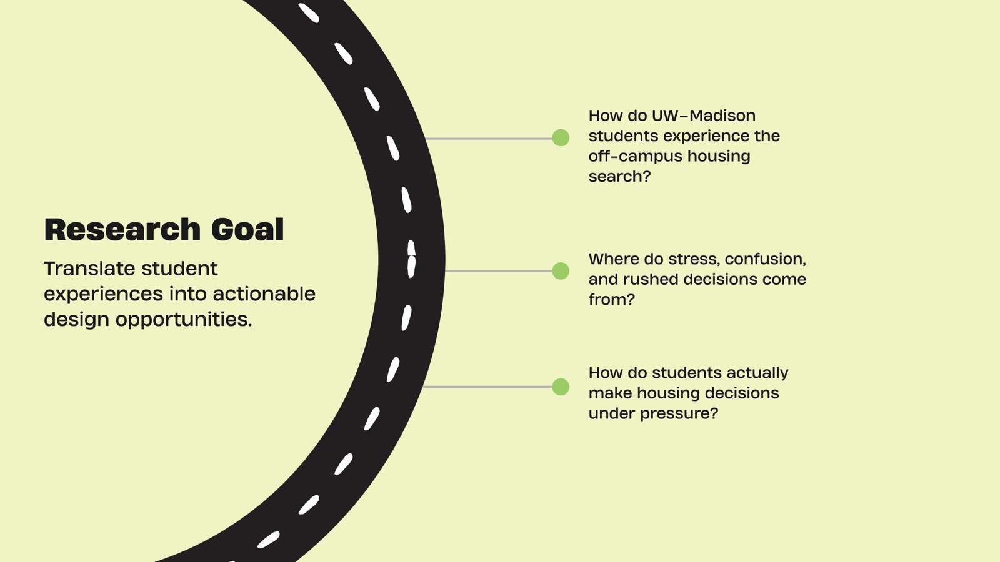
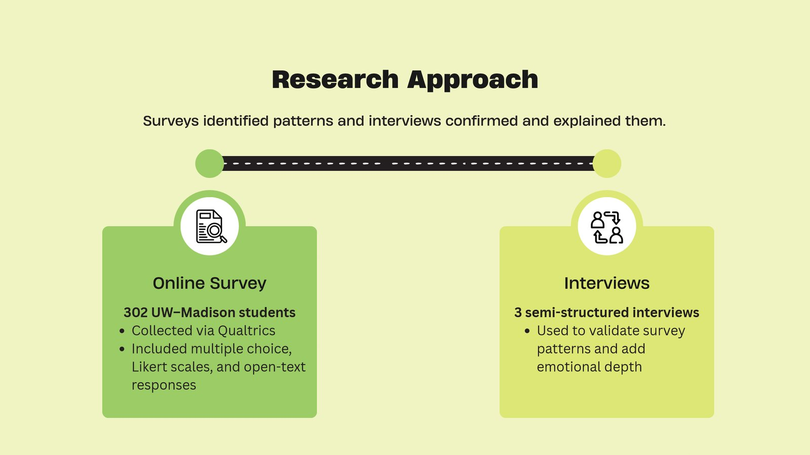
Two things changed from our plan. We aimed for about 20 survey responses and reached 302, and we planned five interviews but completed three because of time. To make up for that, we added open-ended survey questions to capture qualitative detail at scale.
Pressure to commit early, and too little reliable information.
Five insights came out of the synthesis: early leasing timelines pressure students to commit before they feel informed; housing costs affect quality of life and academic focus; fragmented information creates confusion and distrust; available housing favors luxury over student needs; and unreliable roommate-finding adds stress under tight timelines.
One interviewee described a first search this way: “The first year was scams. I couldn’t even contact the landlord.” Another said: “I was just settling into freshman year, then I had to look for housing right away. Everything comes at you at once.”
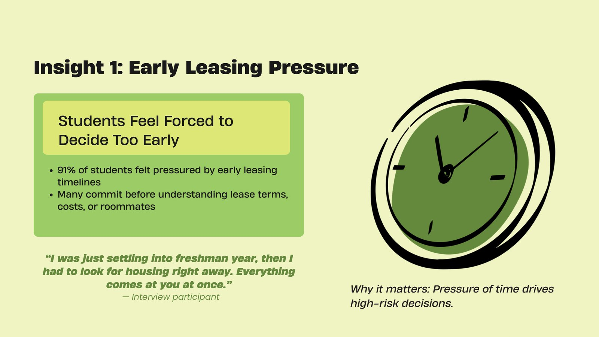
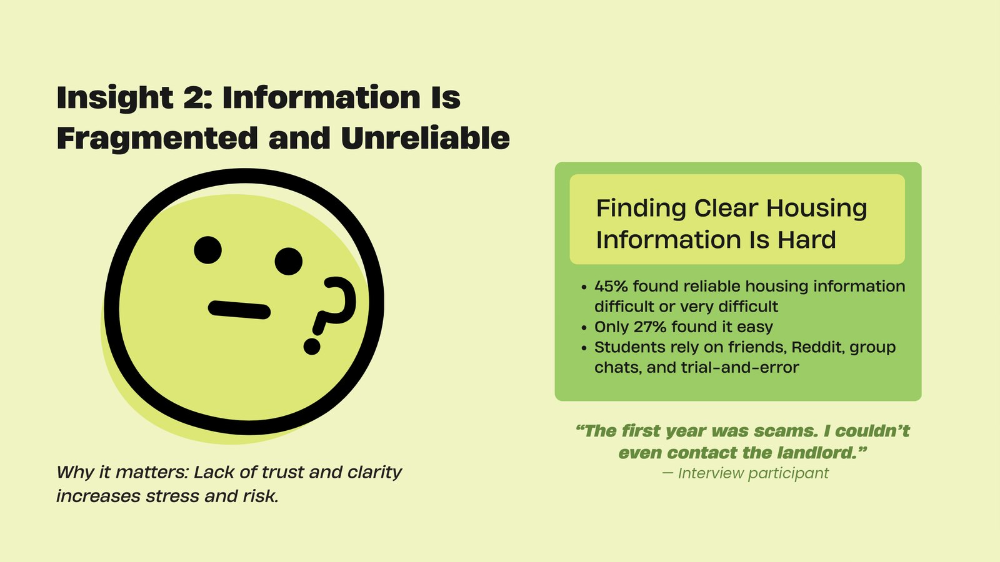
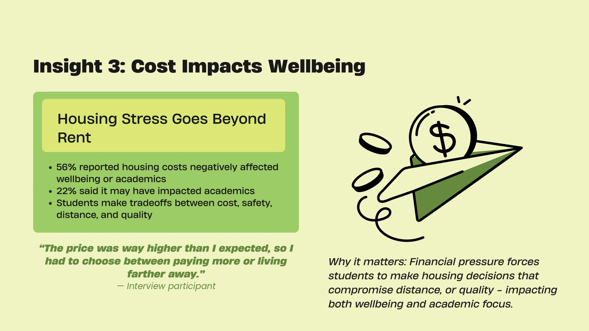
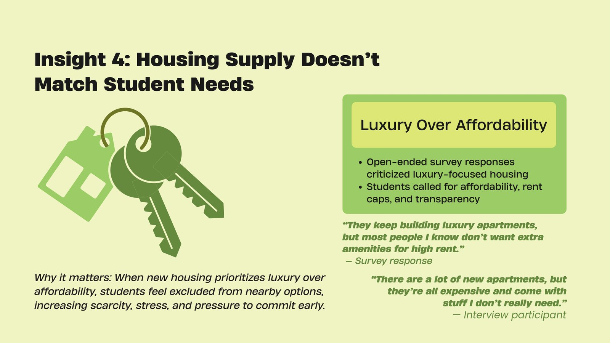
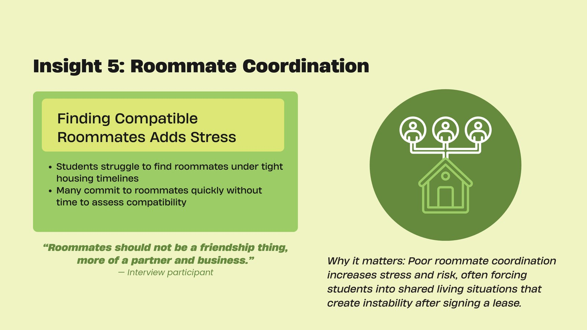
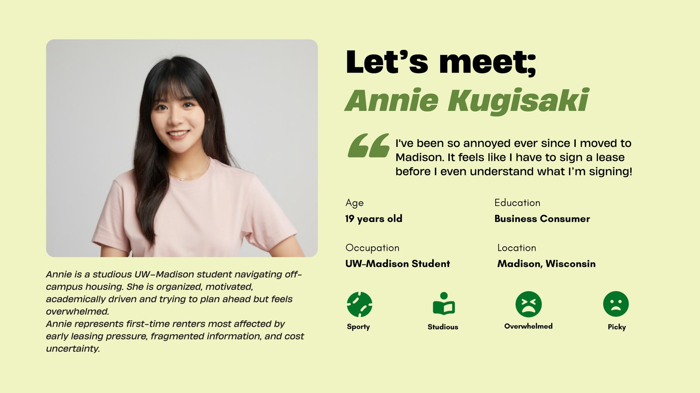
Five design recommendations.
Each recommendation ties back to what we found, so students can make calmer, better-informed decisions.
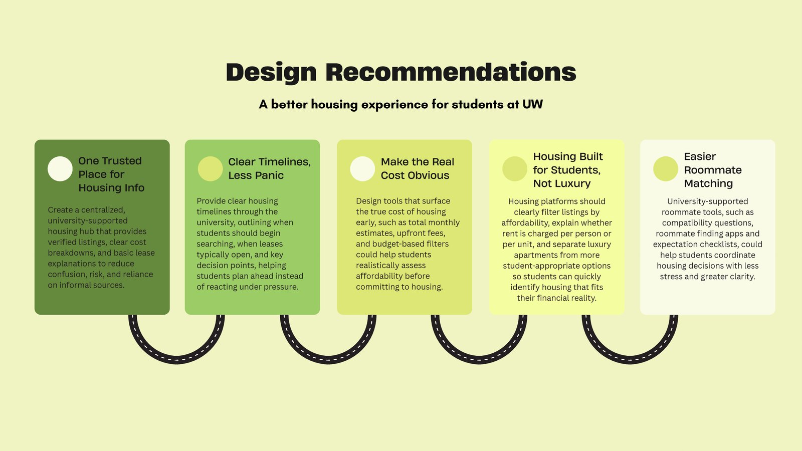
1. A centralized housing information hub. With 45% finding reliable information hard to get, and students leaning on scattered sources (38% friends or peers, 38% online rental sites, 15% social media), a university-supported platform with verified listings, timelines, and cost breakdowns could build trust and cut confusion.
2. Clear timelines, less panic. Because 91% felt pushed to commit early, leasing calendars, deadline alerts, and guidance on when to start searching could help students anticipate pressure points instead of reacting to them.
3. Make the real cost obvious. With 56% saying costs hurt their wellbeing or focus, budget filters, upfront fee disclosures, and total monthly and annual cost estimates would show affordability before students commit.
4. Housing built for students, not luxury. Students prioritized affordability, transparency, and basic livability over amenities, so tools could separate luxury from affordable options and explain things like per-person versus per-unit rent and how increases work.
5. Roommate coordination support. Lightweight tools such as compatibility questionnaires and expectation checklists could help students communicate priorities earlier, reducing the stress of last-minute roommate decisions without replacing social matching.